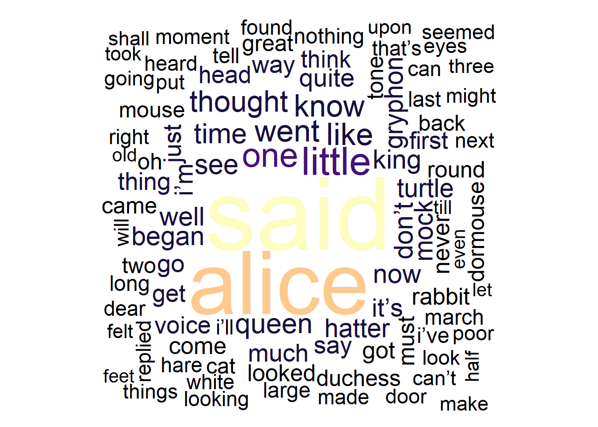

Practical Overview of Selected Text Analytics Methods
Martin Schweinberger
2022-11-15

Introduction

This tutorial introduces Text Analysis (see Bernard and Ryan 1998; Kabanoff 1997; Popping 2000), i.e. computer-based analysis of language data or the (semi-)automated extraction of information from text. This tutorial shows beginner and intermediate users of R how to perform basic text analytic procedures. The aim is not to provide a fully-fledged analysis but rather to show and exemplify selected useful methods associated with text analysis and distant reading.
The entire R Notebook for the tutorial can be downloaded here.
If you want to render the R Notebook on your machine, i.e. knitting the
document to html or a pdf, you need to make sure that you have R and
RStudio installed and you also need to download the bibliography
file and store it in the same folder where you store the
Rmd file.

Click
this link to open an interactive version of this tutorial on
MyBinder.org.
This interactive Jupyter notebook allows
you to execute code yourself and you can also change and edit the
notebook, e.g. you can change code and upload your own data.
Most of the applications of Text Analysis are based upon a relatively limited number of key procedures or concepts (e.g. concordancing, word frequencies, annotation or tagging, parsing, collocation, text classification, Sentiment Analysis, Entity Extraction, Topic Modeling, etc.). In the following, we will explore these procedures and introduce some basic tools that help you perform the introduced tasks.
Preparation and session set up
This tutorial is based on R. If you have not installed R or are new to it, you will find an introduction to and more information how to use R here. For this tutorials, we need to install certain packages from an R library so that the scripts shown below are executed without errors. Before turning to the code below, please install the packages by running the code below this paragraph. If you have already installed the packages mentioned below, then you can skip ahead and ignore this section. To install the necessary packages, simply run the following code - it may take some time (between 1 and 5 minutes to install all of the packages so you do not need to worry if it takes some time).
# install packages
install.packages("quanteda")
install.packages("dplyr")
install.packages("stringr")
install.packages("ggplot2")
install.packages("tm")
install.packages("udpipe")
install.packages("tidytext")
install.packages("wordcloud2")
install.packages("quanteda.textstats")
install.packages("quanteda.textplots")
install.packages("flextable")
# install klippy for copy-to-clipboard button in code chunks
install.packages("remotes")
remotes::install_github("rlesur/klippy")Now that we have installed the packages, we can activate them as shown below.
# load packages
library(dplyr)
library(stringr)
library(ggplot2)
library(flextable)
library(quanteda)
library(tm)
library(udpipe)
library(tidytext)
library(wordcloud2)
library(flextable)
library(quanteda.textstats)
library(quanteda.textplots)
library(tidyr)
# activate klippy for copy-to-clipboard button
klippy::klippy()Once you have initiated the session by executing the code shown above, you are good to go.
Concordancing
In Text Analysis, concordancing refers to the extraction of words from a given text or texts (Lindquist 2009). Commonly, concordances are displayed in the form of key-word in contexts (KWIC) where the search term is shown with some preceding and following context. Thus, such displays are referred to as key word in context concordances. A more elaborate tutorial on how to perform concordancing with R is available here.

Concordancing is helpful for seeing how the term is used in the data, for inspecting how often a given word occurs in a text or a collection of texts, for extracting examples, and it also represents a basic procedure and often the first step in more sophisticated analyses of language data.
In the following, we will use R to query and investigate text, using Lewis Caroll’s Alice’s Adventures in Wonderland as our example text.
We begin by loading the data which represents the text of Lewis Caroll’s Alice’s Adventures in Wonderland. For the present tutorial, we load data that is available on the LADAL GitHUb repository. If you want to know how to load your own data, have a look at this tutorial.
# load text
text <- base::readRDS(url("https://slcladal.github.io/data/alice.rda", "rb")). |
Alice’s Adventures in Wonderland |
by Lewis Carroll |
CHAPTER I. |
Down the Rabbit-Hole |
Alice was beginning to get very tired of sitting by her sister on the |
bank, and of having nothing to do: once or twice she had peeped into |
The data still consists of short text snippets which is why we collapse these snippets and then split the collapsed data into chapters.
# combine and split into chapters
text_chapters <- text %>%
# paste all texts together into one long text
paste0(collapse = " ") %>%
# replace Chapter I to Chapter XVI with qwertz
stringr::str_replace_all("(CHAPTER [XVI]{1,7}\\.{0,1}) ", "qwertz\\1") %>%
# convert text to lower case
tolower() %>%
# split the long text into chapters
stringr::str_split("qwertz") %>%
# unlist the result (convert into simple vector)
unlist(). |
alice’s adventures in wonderland by lewis carroll |
chapter i.down the rabbit-hole alice was beginning to get very tired of sitting by her sister on the bank, and of having nothing to do: once or twice she had peeped into the book her sister was reading, but it had no pictures or conversations in it, “and what is the use of a book,” thought alice “without pictures or conversations?” so she was considering in her own mind (as well as she could, for the hot day made her feel very sleepy and stupid), whether the pleasure of making a daisy-chain woul |
chapter ii.the pool of tears “curiouser and curiouser!” cried alice (she was so much surprised, that for the moment she quite forgot how to speak good english); “now i’m opening out like the largest telescope that ever was! good-bye, feet!” (for when she looked down at her feet, they seemed to be almost out of sight, they were getting so far off). “oh, my poor little feet, i wonder who will put on your shoes and stockings for you now, dears? i’m sure _i_ shan’t be able! i shall be a great deal t |
chapter iii.a caucus-race and a long tale they were indeed a queer-looking party that assembled on the bank—the birds with draggled feathers, the animals with their fur clinging close to them, and all dripping wet, cross, and uncomfortable. the first question of course was, how to get dry again: they had a consultation about this, and after a few minutes it seemed quite natural to alice to find herself talking familiarly with them, as if she had known them all her life. indeed, she had quite a l |
chapter iv.the rabbit sends in a little bill it was the white rabbit, trotting slowly back again, and looking anxiously about as it went, as if it had lost something; and she heard it muttering to itself “the duchess! the duchess! oh my dear paws! oh my fur and whiskers! she’ll get me executed, as sure as ferrets are ferrets! where _can_ i have dropped them, i wonder?” alice guessed in a moment that it was looking for the fan and the pair of white kid gloves, and she very good-naturedly began hu |
chapter v.advice from a caterpillar the caterpillar and alice looked at each other for some time in silence: at last the caterpillar took the hookah out of its mouth, and addressed her in a languid, sleepy voice. “who are _you?_” said the caterpillar. this was not an encouraging opening for a conversation. alice replied, rather shyly, “i—i hardly know, sir, just at present—at least i know who i _was_ when i got up this morning, but i think i must have been changed several times since then.” “wha |
Once we have split the data into chapters, we perform the
concordancing and extract the KWICs. To create these kwics, we use the
kwic function from the quanteda package. This
function takes the data (x), the search pattern (pattern), and the
window size as its main arguments.
To start with, we generate kwics for the term alice as shown below.
# create kwic
kwic_alice <- quanteda::kwic(x = text_chapters, # define text(s)
# define pattern
pattern = "alice",
# define window size
window = 5) %>%
# convert into a data frame
as.data.frame() %>%
# remove superfluous columns
dplyr::select(-to, -from, -pattern)docname | pre | keyword | post |
text2 | chapter i.down the rabbit-hole | alice | was beginning to get very |
text2 | a book , " thought | alice | " without pictures or conversations |
text2 | in that ; nor did | alice | think it so _very_ much |
text2 | and then hurried on , | alice | started to her feet , |
text2 | in another moment down went | alice | after it , never once |
text2 | down , so suddenly that | alice | had not a moment to |
We can also use regular expressions in our search to extract not only
alice but also more complex and even vague patterns. Vague
means that only part of the pattern is specified. For instance, maybe
only walk is specified and now we want all words containing
this sequence including walking, walker,
walked, and walks. To retrieve such vague patterns, we
need to use so-called regular expressions. Also, when using a
regular expression in the pattern argument, we need to
specify the valuetype as regex (as shown
below).
# create kwic
kwic_walk <- quanteda::kwic(x = text_chapters,
pattern = "walk.*",
window = 5,
valuetype = "regex") %>%
# convert into a data frame
as.data.frame() %>%
# remove superfluous columns
dplyr::select(-to, -from, -pattern)docname | pre | keyword | post |
text2 | out among the people that | walk | with their heads downward ! |
text2 | to dream that she was | walking | hand in hand with dinah |
text2 | trying every door , she | walked | sadly down the middle , |
text3 | " or perhaps they won't | walk | the way i want to |
text4 | mouse , getting up and | walking | away . " you insult |
text4 | its head impatiently , and | walked | a little quicker . " |
text5 | and get ready for your | walk | ! ' ' coming in |
text7 | , " if you only | walk | long enough . " alice |
text7 | a minute or two she | walked | on in the direction in |
text7 | high : even then she | walked | up towards it rather timidly |
When search for expressions that represent phrase and that consists out of several elements such as poor alice, we also need to specify that we are looking for a phrase in the pattern argument.
# create kwic
kwic_pooralice <- quanteda::kwic(x = text_chapters,
pattern = quanteda::phrase("poor alice"),
window = 5) %>%
# convert into a data frame
as.data.frame() %>%
# remove superfluous columns
dplyr::select(-to, -from, -pattern)docname | pre | keyword | post |
text2 | go through , " thought | poor alice | , " it would be |
text2 | ; but , alas for | poor alice | ! when she got to |
text2 | use now , " thought | poor alice | , " to pretend to |
text3 | to the garden door . | poor alice | ! it was as much |
text3 | right words , " said | poor alice | , and her eyes filled |
text4 | mean it ! " pleaded | poor alice | . " but you're so |
We could now continue and analyze how the phrase poor alice is used or perform similar analyses.
Word Frequency
Almost all methods used in text analytics rely on frequency information. Thus, fending out out frequent words are in a text is a fundamental technique in text analytics. In fact, frequency information lies at the very core of Text Analysis. Such frequency information often comes in the form of word frequency lists, i.e. lists of word forms and their frequency in a given text or collection of texts.
As extracting word frequency lists is very important, we will now We will now extract a frequency list from a corpus.
In a first step, we load a corpus, convert everything to lower case, remove non-word symbols (including punctuation), and split the corpus data into individual words.
# load and process corpus
text_words <- text %>%
# convert everything to lower case
tolower() %>%
# remove non-word characters
str_replace_all("[^[:alpha:][:space:]]*", "") %>%
tm::removePunctuation() %>%
stringr::str_squish() %>%
stringr::str_split(" ") %>%
unlist(). |
alices |
adventures |
in |
wonderland |
by |
lewis |
carroll |
chapter |
i |
down |
the |
rabbithole |
alice |
was |
beginning |
Now that we have a vector of words, we can easily create a table representing a word frequency list (as shown below).
# create table
wfreq <- text_words %>%
table() %>%
as.data.frame() %>%
arrange(desc(Freq)) %>%
dplyr::rename(word = 1,
frequency = 2)word | frequency |
the | 1,630 |
and | 844 |
to | 721 |
a | 627 |
she | 537 |
it | 526 |
of | 508 |
said | 462 |
i | 400 |
alice | 385 |
in | 366 |
you | 360 |
was | 357 |
that | 276 |
as | 262 |
The most frequent words are all function words which are often not meaningful or useful for an analysis. Thus, we now remove these function words (also called stopwords) from the frequency list and inspect the list without stopwords.
# create table wo stopwords
wfreq_wostop <- wfreq %>%
anti_join(tidytext::stop_words, by = "word") %>%
dplyr::filter(word != "")word | frequency |
alice | 385 |
queen | 68 |
time | 68 |
king | 61 |
dont | 60 |
im | 57 |
mock | 56 |
turtle | 56 |
gryphon | 55 |
hatter | 55 |
head | 48 |
voice | 47 |
looked | 45 |
rabbit | 43 |
round | 41 |
Such word frequency lists can be visualized in various ways. The most common way to visualize word frequency lists is in the form of bargraphs.
wfreq_wostop %>%
head(10) %>%
ggplot(aes(x = reorder(word, -frequency, mean), y = frequency)) +
geom_bar(stat = "identity") +
labs(title = "10 most frequent non-stop words \nin the example text",
x = "") +
theme(axis.text.x = element_text(angle = 45, size = 12, hjust = 1))
Wordclouds
Alternatively, word frequency lists can be visualized, although less informative, as word clouds.
# create wordcloud
text %>%
quanteda::corpus() %>%
quanteda::tokens(remove_punct = TRUE) %>%
quanteda::tokens_remove(stopwords("english")) %>%
quanteda::dfm() %>%
quanteda.textplots::textplot_wordcloud()
Another variant of word clouds, so-called comparison clouds, Word lists can be used to determine differences between texts. For instance, we can load different texts and check whether they differ with respect to word frequencies. To show this, we load Herman Melville’s Moby Dick, George Orwell’s 1984, and we also use Darwin’s Origin.
In a first step, we load these texts and collapse them into single documents.
# load data
orwell_sep <- base::readRDS(url("https://slcladal.github.io/data/orwell.rda", "rb"))
orwell <- orwell_sep %>%
paste0(collapse = " ")
melville_sep <- base::readRDS(url("https://slcladal.github.io/data/melville.rda", "rb"))
melville <- melville_sep %>%
paste0(collapse = " ")
darwin_sep <- base::readRDS(url("https://slcladal.github.io/data/melville.rda", "rb"))
darwin <- darwin_sep %>%
paste0(collapse = " ")Now, we generate a corpus object from these texts and create a variable with the author name.
corp_dom <- quanteda::corpus(c(darwin, orwell, melville))
attr(corp_dom, "docvars")$Author = c("Darwin", "Orwell", "Melville")Now, we can remove so-called stopwords (non-lexical function words) and punctuation and generate the comparison cloud.
corp_dom %>%
quanteda::tokens(remove_punct = TRUE) %>%
quanteda::tokens_remove(stopwords("english")) %>%
quanteda::dfm() %>%
quanteda::dfm_group(groups = corp_dom$Author) %>%
quanteda::dfm_trim(min_termfreq = 200, verbose = FALSE) %>%
quanteda.textplots::textplot_wordcloud(comparison = TRUE)
Frequency changes
We can also investigate the use of the term alice across chapters of the example text. In a first step, we extract the number of words in each chapter.
# extract number of words per chapter
Words <- text_chapters %>%
stringr::str_split(" ") %>%
lengths()
# inspect data
Words## [1] 8 2364 2125 1765 2616 2339 2609 2307 2487 2272 2058 1886 2153Next, we extract the number of matches in each chapter.
# extract number of matches per chapter
Matches <- text_chapters %>%
stringr::str_count("alice")
# inspect the number of matches per chapter
Matches## [1] 1 28 26 23 31 35 43 51 39 52 30 16 23Now, we extract the names of the chapters and create a table with the chapter names and the relative frequency of matches per 1,000 words.
# extract chapters
Chapters <- paste0("chapter ", 0:(length(text_chapters)-1))
Chapters## [1] "chapter 0" "chapter 1" "chapter 2" "chapter 3" "chapter 4"
## [6] "chapter 5" "chapter 6" "chapter 7" "chapter 8" "chapter 9"
## [11] "chapter 10" "chapter 11" "chapter 12"# create table of results
tb <- data.frame(Chapters, Matches, Words) %>%
dplyr::mutate(Frequency = round(Matches/Words*1000, 2))Chapters | Matches | Words | Frequency |
chapter 0 | 1 | 8 | 125.00 |
chapter 1 | 28 | 2,364 | 11.84 |
chapter 2 | 26 | 2,125 | 12.24 |
chapter 3 | 23 | 1,765 | 13.03 |
chapter 4 | 31 | 2,616 | 11.85 |
chapter 5 | 35 | 2,339 | 14.96 |
chapter 6 | 43 | 2,609 | 16.48 |
chapter 7 | 51 | 2,307 | 22.11 |
chapter 8 | 39 | 2,487 | 15.68 |
chapter 9 | 52 | 2,272 | 22.89 |
chapter 10 | 30 | 2,058 | 14.58 |
chapter 11 | 16 | 1,886 | 8.48 |
chapter 12 | 23 | 2,153 | 10.68 |
We can now visualize the relative frequencies of our search word per chapter.
# create plot
ggplot(tb, aes(x = Chapters, y = Frequency, group = 1)) +
geom_smooth(color = "purple") +
geom_line(color = "darkgray") +
guides(color=guide_legend(override.aes=list(fill=NA))) +
theme_bw() +
theme(axis.text.x = element_text(angle = 45, hjust = 1))+
scale_y_continuous(name ="Relative Frequency (per 1,000 words)")
Dispersion plots
To show when in a text or in a collection of texts certain terms
occur, we can use dispersion plots. The quanteda
package offers a very easy-to-use function textplot_xray to
generate dispersion plots.
# add chapter names
names(text_chapters) <- Chapters
# generate corpus from chapters
text_corpus <- quanteda::corpus(text_chapters)
# generate dispersion plots
quanteda.textplots::textplot_xray(kwic(text_corpus, pattern = "alice"),
kwic(text_corpus, pattern = "hatter"),
sort = T)
We can modify the plot by saving it into an object and then use
ggplot to modify it appearance.
# generate and save dispersion plots
dp <- quanteda.textplots::textplot_xray(kwic(text_corpus, pattern = "alice"),
kwic(text_corpus, pattern = "cat"))
# modify plot
dp + aes(color = keyword) +
scale_color_manual(values = c('red', 'blue')) +
theme(legend.position = "none")
Over- and underuse
Frequency information can also tell us something about the nature of a text. For instance, private dialogues will typically contain higher rates of second person pronouns compared with more format text types, such as, for instance, scripted monologues like speeches. For this reason, word frequency lists can be used in text classification and to determine the formality of texts.
As an example, below you find the number of the second person pronouns you and your and the number of all words except for these second person pronouns in private dialogues compared with scripted monologues in the Irish component of the International Corpus of English (ICE). In addition, the tables shows the percentage of second person pronouns in both text types to enable seeing whether private dialogues contain more of these second person pronouns than scripted monologues (i.e. speeches).
. | Private dialogues | Scripted monologues |
you, your | 6761 | 659 |
Other words | 259625 | 105295 |
Percent | 2.60 | 0.63 |
This simple example shows that second person pronouns make up 2.6 percent of all words that are used in private dialogues while they only amount to 0.63 percent in scripted speeches. A handy way to present such differences visually are association and mosaic plots.
d <- matrix(c(6761, 659, 259625, 105295), nrow = 2, byrow = T)
colnames(d) <- c("D", "M")
rownames(d) <- c("you, your", "Other words")
assocplot(d)Bars above the dashed line indicate relative overuse while bars below the line suggest relative under-use. Therefore, the association plot indicates under-use of you and your and overuse of other words in monologues while the opposite trends holds true for dialogues, i.e. overuse of you and your and under-use of Other words.
N-grams, Collocations, and Keyness
Collocation refers to the co-occurrence of words. A typical example of a collocation is Merry Christmas because the words merry and Christmas occur together more frequently together than would be expected by chance, if words were just randomly stringed together.
N-grams are related to collocates in that they represent words that occur together (bi-grams are two words that occur together, tri-grams three words and so on). Fortunately, creating N-gram lists is very easy. We will use the example text to create a bi-gram list. We can simply take each word and combine it with the following word.
# create data frame
text_bigrams <- data.frame(text_words[1:length(text_words)-1],
text_words[2:length(text_words)]) %>%
dplyr::rename(Word1 = 1,
Word2 = 2) %>%
dplyr::mutate(Bigram = paste0(Word1, " ", Word2)) %>%
dplyr::group_by(Bigram) %>%
dplyr::summarise(Frequency = n()) %>%
dplyr::arrange(-Frequency)Bigram | Frequency |
said the | 210 |
of the | 130 |
said alice | 115 |
in a | 97 |
and the | 80 |
in the | 79 |
it was | 74 |
to the | 69 |
the queen | 65 |
as she | 61 |
at the | 60 |
she had | 60 |
the king | 60 |
a little | 59 |
she was | 55 |
Both N-grams and collocations are not only an important concept in language teaching but they are also fundamental in Text Analysis and many other research areas working with language data. Unfortunately, words that collocate do not have to be immediately adjacent but can also encompass several slots which makes it harder to retrieve of collocates that are not adjacent- We will find out how to identify non-adjacent collocates in the next section.
Finding collocations
There are various techniques for identifying collocations. To
identify collocations without having a pre-defined target term, we can
use the textstat_collocations function from the
quanteda.textstats package.
However, before we can apply that function and start identifying collocations, we need to process the data to which we want to apply this function. In the present case, we will apply that function to the sentences in the example text which we extract in the code chunk below.
text_sentences <- text %>%
tolower() %>%
paste0(collapse= " ") %>%
stringr::str_split(fixed(".")) %>%
unlist() %>%
tm::removePunctuation() %>%
stringr::str_squish(). |
alice’s adventures in wonderland by lewis carroll chapter i |
down the rabbithole alice was beginning to get very tired of sitting by her sister on the bank and of having nothing to do once or twice she had peeped into the book her sister was reading but it had no pictures or conversations in it “and what is the use of a book” thought alice “without pictures or conversations” so she was considering in her own mind as well as she could for the hot day made her feel very sleepy and stupid whether the pleasure of making a daisychain would be worth the trouble of getting up and picking the daisies when suddenly a white rabbit with pink eyes ran close by her |
there was nothing so very remarkable in that nor did alice think it so very much out of the way to hear the rabbit say to itself “oh dear oh dear i shall be late” when she thought it over afterwards it occurred to her that she ought to have wondered at this but at the time it all seemed quite natural but when the rabbit actually took a watch out of its waistcoatpocket and looked at it and then hurried on alice started to her feet for it flashed across her mind that she had never before seen a rabbit with either a waistcoatpocket or a watch to take out of it and burning with curiosity she ran across the field after it and fortunately was just in time to see it pop down a large rabbithole under the hedge |
in another moment down went alice after it never once considering how in the world she was to get out again |
the rabbithole went straight on like a tunnel for some way and then dipped suddenly down so suddenly that alice had not a moment to think about stopping herself before she found herself falling down a very deep well |
either the well was very deep or she fell very slowly for she had plenty of time as she went down to look about her and to wonder what was going to happen next |
first she tried to look down and make out what she was coming to but it was too dark to see anything then she looked at the sides of the well and noticed that they were filled with cupboards and bookshelves here and there she saw maps and pictures hung upon pegs |
she took down a jar from one of the shelves as she passed it was labelled “orange marmalade” but to her great disappointment it was empty she did not like to drop the jar for fear of killing somebody underneath so managed to put it into one of the cupboards as she fell past it |
“well” thought alice to herself “after such a fall as this i shall think nothing of tumbling down stairs how brave they’ll all think me at home why i wouldn’t say anything about it even if i fell off the top of the house” which was very likely true |
down down down |
would the fall never come to an end “i wonder how many miles i’ve fallen by this time” she said aloud |
“i must be getting somewhere near the centre of the earth |
let me see that would be four thousand miles down i think—” for you see alice had learnt several things of this sort in her lessons in the schoolroom and though this was not a very good opportunity for showing off her knowledge as there was no one to listen to her still it was good practice to say it over “—yes that’s about the right distance—but then i wonder what latitude or longitude i’ve got to” alice had no idea what latitude was or longitude either but thought they were nice grand words to say |
presently she began again |
“i wonder if i shall fall right through the earth how funny it’ll seem to come out among the people that walk with their heads downward the antipathies i think—” she was rather glad there was no one listening this time as it didn’t sound at all the right word “—but i shall have to ask them what the name of the country is you know |
From the output shown above, we also see that splitting texts simply by full stops is not optimal as it produces some unwarranted artifacts like the “sentences” that consist of single characters (due to the name of the H.M.S. Beagle - the ship on which Darwin traveled when he explored the southern hemisphere). Fortunately, these errors do not really matter in the case of our example.
Now that we have split the example text into sentences, we can
tokenize these sentences and apply the
textstat_collocations function which identifies
collocations.
# create a token object
text_tokens <- tokens(text_sentences, remove_punct = TRUE) %>%
tokens_remove(stopwords("english"))
# extract collocations
text_coll <- textstat_collocations(text_tokens, size = 2, min_count = 20)collocation | count | count_nested | length | lambda | z |
said alice | 121 | 0 | 2 | 2.932312 | 23.017768 |
white rabbit | 22 | 0 | 2 | 7.320030 | 15.843499 |
mock turtle | 54 | 0 | 2 | 11.145243 | 13.281773 |
thought alice | 26 | 0 | 2 | 3.070789 | 12.171649 |
said king | 29 | 0 | 2 | 3.221498 | 12.155748 |
said hatter | 22 | 0 | 2 | 2.968924 | 10.372201 |
said mock | 20 | 0 | 2 | 2.679614 | 9.464654 |
march hare | 31 | 0 | 2 | 12.545276 | 8.044760 |
The resulting table shows collocations in the example text descending by collocation strength.
Visualizing Collocation Networks
Network graphs are a very useful and flexible tool for visualizing
relationships between elements such as words, personas, or authors. This
section shows how to generate a network graph for collocations of the
term alice using the quanteda package.
In a first step, we generate a document-feature matrix based on the sentences in the example text. A document-feature matrix shows how often elements (here these elements are the words that occur in the the example text) occur in a selection of documents (here these documents are the sentences in the example text).
# create document-feature matrix
text_dfm <- text_sentences %>%
quanteda::dfm(remove = stopwords('english'), remove_punct = TRUE) %>%
quanteda::dfm_trim(min_termfreq = 10, verbose = FALSE)doc_id | alice's | chapter | alice | beginning | get | sitting |
text1 | 1 | 1 | 0 | 0 | 0 | 0 |
text2 | 0 | 0 | 2 | 1 | 1 | 1 |
text3 | 0 | 0 | 2 | 0 | 0 | 0 |
text4 | 0 | 0 | 1 | 0 | 1 | 0 |
text5 | 0 | 0 | 1 | 0 | 0 | 0 |
text6 | 0 | 0 | 0 | 0 | 0 | 0 |
As we want to generate a network graph of words that collocate with
the term organism, we use the
calculateCoocStatistics function to determine which words
most strongly collocate with our target term (organism).
# load function for co-occurrence calculation
source("https://slcladal.github.io/rscripts/calculateCoocStatistics.R")
# define term
coocTerm <- "alice"
# calculate co-occurrence statistics
coocs <- calculateCoocStatistics(coocTerm, text_dfm, measure="LOGLIK")
# inspect results
coocs[1:20]## thought like much looked say well way things
## 62.185957 23.876107 23.541486 18.165007 15.593621 14.901895 13.157512 12.058324
## talking little afraid every king ran saw seemed
## 11.713869 11.678941 11.481745 11.481745 11.195298 10.694290 10.694290 10.652633
## said hatter cried oh
## 10.369215 9.963506 9.654420 9.599779We now reduce the document-feature matrix to contain only the top 20 collocates of organism (plus our target word organism).
redux_dfm <- dfm_select(text_dfm,
pattern = c(names(coocs)[1:20], "alice"))doc_id | alice | thought | well | ran | much | way |
text1 | 0 | 0 | 0 | 0 | 0 | 0 |
text2 | 2 | 1 | 1 | 1 | 0 | 0 |
text3 | 2 | 1 | 0 | 1 | 1 | 1 |
text4 | 1 | 0 | 0 | 0 | 0 | 0 |
text5 | 1 | 0 | 1 | 0 | 0 | 1 |
text6 | 0 | 0 | 1 | 0 | 0 | 0 |
Now, we can transform the document-feature matrix into a feature-co-occurrence matrix as shown below. A feature-co-occurrence matrix shows how often each element in that matrix co-occurs with every other element in that matrix.
tag_fcm <- fcm(redux_dfm)doc_id | alice | thought | well | ran | much | way |
alice | 31 | 66 | 42 | 17 | 43 | 51 |
thought | 0 | 1 | 12 | 3 | 8 | 8 |
well | 0 | 0 | 3 | 3 | 9 | 10 |
ran | 0 | 0 | 0 | 2 | 2 | 4 |
much | 0 | 0 | 0 | 0 | 2 | 13 |
way | 0 | 0 | 0 | 0 | 0 | 21 |
Using the feature-co-occurrence matrix, we can generate the network
graph which shows the terms that collocate with the target term
alice with the edges representing the co-occurrence frequency.
To generate this network graph, we use the textplot_network
function from the quanteda.textplots package.
# generate network graph
textplot_network(tag_fcm,
min_freq = 1,
edge_alpha = 0.1,
edge_size = 5,
edge_color = "purple",
vertex_labelsize = log(rowSums(tag_fcm))*2)
Keyness
Another common method that can be used for automated text summarization is keyword extraction. Keyword extraction builds on identifying words that are particularly associated with a certain text. In other words, keyness analysis aims to identify words that are particularly indicative of the content of a certain text.
Below, we identify key words for Charles Darwin’s Origin, Herman Melville’s Moby Dick, and George Orwell’s 1984. We start by creating a weighted document feature matrix from the corpus containing the three texts.
In order to create a corpus, we use the text objects that consist out of many different elements rather than the objects which contained the collapsed texts that we used above. Thus, in a first step, we create a corpus of the texts.
corp_dom <- quanteda::corpus(c(darwin_sep, orwell_sep, melville_sep))
attr(corp_dom, "docvars")$Author = c(rep("Darwin", length(darwin_sep)),
rep("Orwell", length(orwell_sep)),
rep("Melville", length(melville_sep)))Next, we generate the document feature matrix and we clean it by removing stopwords and selected other words. In addition, we group the documents feature matrix by author.
dfm_authors <- corp_dom %>%
quanteda::tokens(remove_punct = TRUE) %>%
quanteda::tokens_remove(quanteda::stopwords("english")) %>%
quanteda::tokens_remove(c("now", "one", "like", "may", "can")) %>%
quanteda::dfm() %>%
quanteda::dfm_group(groups = Author) %>%
quanteda::dfm_weight(scheme = "prop")In a next step, we use the textstat_frequency function
from the quanteda package to extract the most frequent
non-stopwords in the three texts.
# Calculate relative frequency by president
freq_weight <- quanteda.textstats::textstat_frequency(dfm_authors,
n = 10,
groups = dfm_authors$Author)feature | frequency | rank | docfreq | group |
whale | 0.008602501 | 1 | 1 | Darwin |
upon | 0.005370569 | 2 | 1 | Darwin |
man | 0.004277275 | 3 | 1 | Darwin |
old | 0.004210143 | 4 | 1 | Darwin |
ahab | 0.004133420 | 5 | 1 | Darwin |
ye | 0.004066288 | 6 | 1 | Darwin |
ship | 0.003711447 | 7 | 1 | Darwin |
though | 0.003663495 | 8 | 1 | Darwin |
sea | 0.003510051 | 9 | 1 | Darwin |
yet | 0.003299064 | 10 | 1 | Darwin |
whale | 0.008602501 | 1 | 1 | Melville |
upon | 0.005370569 | 2 | 1 | Melville |
man | 0.004277275 | 3 | 1 | Melville |
old | 0.004210143 | 4 | 1 | Melville |
ahab | 0.004133420 | 5 | 1 | Melville |
Now, we can simply plot the most common words and most indicative non-stop words in the three texts.
ggplot(freq_weight, aes(nrow(freq_weight):1, frequency)) +
geom_point() +
facet_wrap(~ group, scales = "free") +
coord_flip() +
scale_x_continuous(breaks = nrow(freq_weight):1,
labels = freq_weight$feature) +
labs(x = NULL, y = "Relative frequency")
Text Classification
Text classification refers to methods that allow to classify a given text to a predefined set of languages, genres, authors, or the like. Such classifications are typically based on the relative frequency of word classes, key words, phonemes, or other linguistic features such as average sentence length, words per line, etc.
As with most other methods that are used in text analysis, text classification typically builds upon a training set that is already annotated with the required tags. Training sets and the features that are derived from these training sets can be created by oneself or one can use build in training sets that are provided in the respective software packages or tools.
In the following, we will use the frequency of phonemes to classify a text. In a first step, we read in a German text, and split it into phonemes.
# read in German text
German <- readLines("https://slcladal.github.io/data/phonemictext1.txt") %>%
stringr::str_remove_all(" ") %>%
stringr::str_split("") %>%
unlist()
# inspect data
head(German, 20)## [1] "?" "a" "l" "s" "h" "E" "s" "@" "d" "e" ":" "n" "S" "t" "E" "p" "@" "n" "v"
## [20] "O"We now do the same for three other texts - an English and a Spanish text as well as one text in a language that we will determine using classification.
# read in texts
English <- readLines("https://slcladal.github.io/data/phonemictext2.txt")
Spanish <- readLines("https://slcladal.github.io/data/phonemictext3.txt")
Unknown <- readLines("https://slcladal.github.io/data/phonemictext4.txt")
# clean, split texts into phonemes, unlist and convert them into vectors
English <- as.vector(unlist(strsplit(gsub(" ", "", English), "")))
Spanish <- as.vector(unlist(strsplit(gsub(" ", "", Spanish), "")))
Unknown <- as.vector(unlist(strsplit(gsub(" ", "", Unknown), "")))
# inspect data
head(English, 20)## [1] "D" "@" "b" "U" "k" "I" "z" "p" "r" "\\" "@" "z" "E" "n" "t"
## [16] "@" "d" "{" "z" "@"We will now create a table that represents the phonemes and their frequencies in each of the 4 texts. In addition, we will add the language and simply the column names.
# create data tables
German <- data.frame(names(table(German)), as.vector(table(German)))
English <- data.frame(names(table(English)), as.vector(table(English)))
Spanish <- data.frame(names(table(Spanish)), as.vector(table(Spanish)))
Unknown <- data.frame(names(table(Unknown)), as.vector(table(Unknown)))
# add column with language
German$Language <- "German"
English$Language <- "English"
Spanish$Language <- "Spanish"
Unknown$Language <- "Unknown"
# simplify column names
colnames(German)[1:2] <- c("Phoneme", "Frequency")
colnames(English)[1:2] <- c("Phoneme", "Frequency")
colnames(Spanish)[1:2] <- c("Phoneme", "Frequency")
colnames(Unknown)[1:2] <- c("Phoneme", "Frequency")
# combine all tables into a single table
classdata <- rbind(German, English, Spanish, Unknown) Phoneme | Frequency | Language |
- | 6 | German |
: | 569 | German |
? | 556 | German |
@ | 565 | German |
2 | 6 | German |
3 | 31 | German |
4 | 67 | German |
5 | 1 | German |
6 | 402 | German |
8 | 32 | German |
Now, we group the data so that we see, how often each phoneme is used in each language.
# convert into wide format
classdw <- classdata %>%
tidyr::spread(Phoneme, Frequency) %>%
replace(is.na(.), 0)Language | ' | - | : | ? | @ |
English | 7 | 8 | 176 | 0 | 309 |
German | 0 | 6 | 569 | 556 | 565 |
Spanish | 0 | 5 | 0 | 0 | 0 |
Unknown | 12 | 12 | 286 | 0 | 468 |
Now, we need to transform the data again, so that we have the frequency of each phoneme by language as the classifier will use “Language” as the dependent variable and the phoneme frequencies as predictors.
numvar <- colnames(classdw)[2:length(colnames(classdw))]
classdw[numvar] <- lapply(classdw[numvar], as.numeric)
# function for normalizing numeric variables
normalize <- function(x) { (x-min(x))/(max(x)-min(x)) }
# apply normalization
classdw[numvar] <- as.data.frame(lapply(classdw[numvar], normalize))Language | ' | - | : | ? | @ |
English | 0.5833333 | 0.4285714 | 0.3093146 | 0 | 0.5469027 |
German | 0.0000000 | 0.1428571 | 1.0000000 | 1 | 1.0000000 |
Spanish | 0.0000000 | 0.0000000 | 0.0000000 | 0 | 0.0000000 |
Unknown | 1.0000000 | 1.0000000 | 0.5026362 | 0 | 0.8283186 |
Before turning to the actual classification, we will use a cluster analysis to see which texts the unknown text is most similar with.
# remove language column
textm <- classdw[,2:ncol(classdw)]
# add languages as row names
rownames(textm) <- classdw[,1]
# create distance matrix
distmtx <- dist(textm)
# perform clustering
clustertexts <- hclust(distmtx, method="ward.D")
# visualize cluster result
plot(clustertexts, hang = .25,main = "") 
According to the cluster analysis, the unknown text clusters together with the English texts which suggests that the unknown text is likely to be English.
Before we begin with the actual classification, we will split the data so that we have one data set without “Unknown” (this is our training set) and one data set with only “Unknown” (this is our test set).
# create training set
train <- classdw %>%
filter(Language != "Unknown")
# create test set
test <- classdw %>%
filter(Language == "Unknown")Language | ' | - | : | ? | @ |
English | 0.5833333 | 0.4285714 | 0.3093146 | 0 | 0.5469027 |
German | 0.0000000 | 0.1428571 | 1.0000000 | 1 | 1.0000000 |
Spanish | 0.0000000 | 0.0000000 | 0.0000000 | 0 | 0.0000000 |
Unknown | 1.0000000 | 1.0000000 | 0.5026362 | 0 | 0.8283186 |
Finally, we can apply our classifier to our data. The classifier we use is a k-nearest neighbor classifier as the underlying function will classify an unknown element given its proximity to the clusters in the training set.
# set seed for reproducibility
set.seed(12345)
# apply k-nearest-neighbor (knn) classifier
prediction <- class::knn(train[,2:ncol(train)],
test[,2:ncol(test)],
cl = train[, 1],
k = 3)
# inspect the result
prediction## [1] English
## Levels: English German SpanishBased on the frequencies of phonemes in the unknown text, the knn-classifier predicts that the unknown text is English. This is in fact true as the text is a subsection of the Wikipedia article for Aldous Huxley’s Brave New World. The training texts were German, English, and Spanish translations of a subsection of Wikipedia’s article for Hermann Hesse’s Steppenwolf.
Part-of-Speech tagging
A very common procedure to add information to texts is to part-of-speech tag the data, which means to determine to what type of word a specific word belongs. Below, we will add pos-tags to a short English text.
We start by selecting a sample of our example text.
# load text
sample <- base::readRDS(url("https://slcladal.github.io/data/alice.rda", "rb")) %>%
.[1:10] %>%
paste0(collapse = " ")
# inspect
substr(sample, 1, 200)## [1] "Alice’s Adventures in Wonderland by Lewis Carroll CHAPTER I. Down the Rabbit-Hole Alice was beginning to get very tired of sitting by her sister on the bank, and of having nothing to do: once or twice"Now that we have a text that we can work with, we will download a pre-trained language model.
# download language model
m_eng <- udpipe::udpipe_download_model(language = "english-ewt")If you have downloaded a model once, you can also load the model directly from the place where you stored it on your computer. In my case, I have stored the model in a folder called udpipemodels
# load language model from your computer after you have downloaded it once
m_eng <- udpipe_load_model(here::here("udpipemodels", "english-ewt-ud-2.5-191206.udpipe"))We can now use the model to annotate out text.
# tokenise, tag, dependency parsing
text_anndf <- udpipe::udpipe_annotate(m_eng, x = sample) %>%
as.data.frame() %>%
dplyr::select(-sentence)
# inspect
head(text_anndf, 10)## doc_id paragraph_id sentence_id token_id token lemma upos xpos
## 1 doc1 1 1 1 Alice Alice PROPN NNP
## 2 doc1 1 1 2 ’s 's PART POS
## 3 doc1 1 1 3 Adventures Adventure NOUN NNS
## 4 doc1 1 1 4 in in ADP IN
## 5 doc1 1 1 5 Wonderland Wonderland PROPN NNP
## 6 doc1 1 1 6 by by ADP IN
## 7 doc1 1 1 7 Lewis Lewis PROPN NNP
## 8 doc1 1 1 8 Carroll Carroll PROPN NNP
## 9 doc1 1 1 9 CHAPTER chapter PROPN NNP
## 10 doc1 1 1 10 I I PRON PRP
## feats head_token_id dep_rel deps
## 1 Number=Sing 3 nmod:poss <NA>
## 2 <NA> 1 case <NA>
## 3 Number=Plur 0 root <NA>
## 4 <NA> 5 case <NA>
## 5 Number=Sing 3 nmod <NA>
## 6 <NA> 7 case <NA>
## 7 Number=Sing 3 nmod <NA>
## 8 Number=Sing 7 flat <NA>
## 9 Number=Sing 7 flat <NA>
## 10 Case=Nom|Number=Sing|Person=1|PronType=Prs 3 appos <NA>
## misc
## 1 SpaceAfter=No
## 2 <NA>
## 3 <NA>
## 4 <NA>
## 5 <NA>
## 6 <NA>
## 7 <NA>
## 8 <NA>
## 9 <NA>
## 10 SpaceAfter=NoIt can be useful to extract only the words and their pos-tags and convert them back into a text format (rather than a tabular format).
tagged_text <- paste(text_anndf$token, "/", text_anndf$xpos, collapse = " ", sep = "")
# inspect tagged text
substr(tagged_text, 1, 200)## [1] "Alice/NNP ’s/POS Adventures/NNS in/IN Wonderland/NNP by/IN Lewis/NNP Carroll/NNP CHAPTER/NNP I/PRP ./. Down/RB the/DT Rabbit/NNP -/HYPH Hole/NNP Alice/NNP was/VBD beginning/VBG to/TO get/VB very/RB ti"We could use the pos-tagged data to study differences in the distribution of word classes across different registers. or to find certain syntactic patterns in a collection of texts.
Names Entity Recognition
Named Entity Recognition (NER) (also referred to as named entity extraction or simply as entity extraction) is a text analytic method which allows us to automatically identify or extract named entities from text(s) such as persons, locations, brands, etc.
As such, NER is a process during which textual elements which have characteristics that are common to proper nouns (locations, people, organizations, etc.) rather than other parts of speech, e.g. non-sentence initial capitalization, are extracted from texts. Retrieving entities is common in automated summarization and in Topic Modeling. NER can be achieved by simple feature extraction (e.g. extract all non-sentence initial capitalized words) or with the help of training sets. Using training sets, i.e. texts that are annotated for entities and non-entities, achieves better results when dealing with unknown data and data with inconsistent capitalization.
Here, we will make use of the results obtained form the pos-tagging and simply extract terms that have been tagged as
# tokenise, tag, dependency parsing
ner_df <- text_anndf %>%
dplyr::filter(upos == "PROPN") %>%
dplyr::select(token_id, token, lemma, upos, feats)
# inspect
head(ner_df)## token_id token lemma upos feats
## 1 1 Alice Alice PROPN Number=Sing
## 2 5 Wonderland Wonderland PROPN Number=Sing
## 3 7 Lewis Lewis PROPN Number=Sing
## 4 8 Carroll Carroll PROPN Number=Sing
## 5 9 CHAPTER chapter PROPN Number=Sing
## 6 3 Rabbit rabbit PROPN Number=SingThe results would now have to be processed further and could be categorized into person, location, dates, entities, for example. However, this should already give you an idea and get you started.
Dependency Parsing Using UDPipe
In addition to pos-tagging, we can also generate plots showing the
syntactic dependencies of the different constituents of a sentence. For
this, we generate an object that contains a sentence (in this case, the
sentence John gave Mary a kiss), and we then plot (or
visualize) the dependencies using the
textplot_dependencyparser function.
# parse text
sent <- udpipe::udpipe_annotate(m_eng, x = "John gave Mary a kiss.") %>%
as.data.frame()
# inspect
head(sent)## doc_id paragraph_id sentence_id sentence token_id token lemma
## 1 doc1 1 1 John gave Mary a kiss. 1 John John
## 2 doc1 1 1 John gave Mary a kiss. 2 gave give
## 3 doc1 1 1 John gave Mary a kiss. 3 Mary Mary
## 4 doc1 1 1 John gave Mary a kiss. 4 a a
## 5 doc1 1 1 John gave Mary a kiss. 5 kiss kiss
## 6 doc1 1 1 John gave Mary a kiss. 6 . .
## upos xpos feats head_token_id dep_rel deps
## 1 PROPN NNP Number=Sing 2 nsubj <NA>
## 2 VERB VBD Mood=Ind|Tense=Past|VerbForm=Fin 0 root <NA>
## 3 PROPN NNP Number=Sing 2 iobj <NA>
## 4 DET DT Definite=Ind|PronType=Art 5 det <NA>
## 5 NOUN NN Number=Sing 2 obj <NA>
## 6 PUNCT . <NA> 2 punct <NA>
## misc
## 1 <NA>
## 2 <NA>
## 3 <NA>
## 4 <NA>
## 5 SpaceAfter=No
## 6 SpacesAfter=\\nWe now generate the plot.
# generate dependency plot
dplot <- textplot::textplot_dependencyparser(sent, size = 3)
# show plot
dplot
Dependency parsing cane be used, e.g. to study who is the agent versus who is the patient of certain actions such as crimes or other activities.
Citation & Session Info
Schweinberger, Martin. 2022. Practical Overview of Selected Text Analytics Methods. Brisbane: The University of Queensland. url: https://ladal.edu.au/textanalysis.html (Version 2022.11.15).
@manual{schweinberger2022ta,
author = {Schweinberger, Martin},
title = {Practical Overview of Selected Text Analytics Methods},
note = {https://ladal.edu.au/textanalysis.html},
year = {2022},
organization = "The University of Queensland, Australia. School of Languages and Cultures},
address = {Brisbane},
edition = {2022.11.15}
}sessionInfo()## R version 4.2.1 RC (2022-06-17 r82510 ucrt)
## Platform: x86_64-w64-mingw32/x64 (64-bit)
## Running under: Windows 10 x64 (build 19043)
##
## Matrix products: default
##
## locale:
## [1] LC_COLLATE=German_Germany.utf8 LC_CTYPE=German_Germany.utf8
## [3] LC_MONETARY=German_Germany.utf8 LC_NUMERIC=C
## [5] LC_TIME=German_Germany.utf8
##
## attached base packages:
## [1] stats graphics grDevices utils datasets methods base
##
## other attached packages:
## [1] slam_0.1-50 Matrix_1.5-1
## [3] tidyr_1.2.0 quanteda.textplots_0.94.1
## [5] quanteda.textstats_0.95 wordcloud2_0.2.1
## [7] tidytext_0.3.4 udpipe_0.8.9
## [9] tm_0.7-8 NLP_0.2-1
## [11] quanteda_3.2.2 flextable_0.8.2
## [13] ggplot2_3.3.6 stringr_1.4.1
## [15] dplyr_1.0.10
##
## loaded via a namespace (and not attached):
## [1] nlme_3.1-157 RColorBrewer_1.1-3 rprojroot_2.0.3
## [4] SnowballC_0.7.0 tools_4.2.1 bslib_0.4.0
## [7] utf8_1.2.2 R6_2.5.1 DBI_1.1.3
## [10] mgcv_1.8-40 colorspace_2.0-3 withr_2.5.0
## [13] gridExtra_2.3 tidyselect_1.1.2 compiler_4.2.1
## [16] textplot_0.2.2 cli_3.3.0 xml2_1.3.3
## [19] network_1.17.2 officer_0.4.4 labeling_0.4.2
## [22] sass_0.4.2 scales_1.2.1 systemfonts_1.0.4
## [25] digest_0.6.29 rmarkdown_2.16 base64enc_0.1-3
## [28] pkgconfig_2.0.3 htmltools_0.5.3 fastmap_1.1.0
## [31] highr_0.9 htmlwidgets_1.5.4 rlang_1.0.4
## [34] rstudioapi_0.14 jquerylib_0.1.4 farver_2.1.1
## [37] generics_0.1.3 jsonlite_1.8.0 statnet.common_4.6.0
## [40] zip_2.2.0 tokenizers_0.2.1 magrittr_2.0.3
## [43] Rcpp_1.0.9 munsell_0.5.0 fansi_1.0.3
## [46] viridis_0.6.2 gdtools_0.2.4 lifecycle_1.0.1
## [49] stringi_1.7.8 yaml_2.3.5 ggraph_2.0.6
## [52] MASS_7.3-57 grid_4.2.1 parallel_4.2.1
## [55] ggrepel_0.9.1 crayon_1.5.1 lattice_0.20-45
## [58] graphlayouts_0.8.1 splines_4.2.1 sna_2.7
## [61] knitr_1.40 klippy_0.0.0.9500 pillar_1.8.1
## [64] igraph_1.3.4 uuid_1.1-0 stopwords_2.3
## [67] fastmatch_1.1-3 glue_1.6.2 evaluate_0.16
## [70] data.table_1.14.2 RcppParallel_5.1.5 tweenr_2.0.1
## [73] vctrs_0.4.1 polyclip_1.10-0 gtable_0.3.0
## [76] purrr_0.3.4 assertthat_0.2.1 cachem_1.0.6
## [79] ggforce_0.3.4 xfun_0.32 tidygraph_1.2.2
## [82] coda_0.19-4 janeaustenr_1.0.0 viridisLite_0.4.1
## [85] class_7.3-20 tibble_3.1.8 nsyllable_1.0.1
## [88] ISOcodes_2022.01.10 ellipsis_0.3.2 here_1.0.1